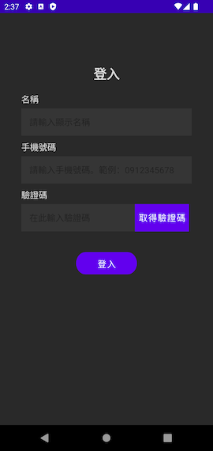

快速開始¶
我們先以一個簡單的空白專案開始，介紹下載、設定與使用 Arctos Client SDK 的所有步驟。請先在 Android Studio 中開啟一個新的 Android APP 專案，並開始依照以下步驟操作。
取得 Arctos Client SDK¶
Arctos Client SDK 可以從桓竑智聯的 Maven Repository 下載。請確保您擁有桓竑智聯提供的有效連結 URL 及身份驗證資訊。
開啟您的 Android 專案，在專案中的 settings.gradle 加入 repository 資料：
dependencyResolutionManagement {
repositories {
google()
mavenCentral()
// Add the following:
maven {
name "Arctos Repository"
url REPOSITORY_URL
credentials(HttpHeaderCredentials) {
name = REPOSITORY_USERNAME
value = REPOSITORY_PASSWORD
}
authentication {
header(HttpHeaderAuthentication)
}
}
}
}
將其中的 REPOSITORY_URL、REPOSITORY_USERNAME、REPOSITORY_PASSWORD 等替換成正確的資料。
接著，在專案的 app/build.gradle 加入引用：
請將 SDK_VERSION 替換成正確的版本號碼。
您的 Android 專案會自動連接函式庫，下載指定版本 Arctos Client SDK 及所需要的其他套件。
設定 Arctos Client SDK¶
首先請在 app/build.gradle 中，開啟 dataBinding 功能：
在專案原始碼中，新增一個 MyApplication 類別。這個類別必須繼承自 ArctosApplication，內容如下：
接著，修改專案 AndroidManifest.xml 檔案，修改 application 標籤下的 android:name 欄位，讓 APP 使用我們自訂的 MyApplication：
修改 APP 主題¶
Arctos Client SDK 的通訊介面會佔用較大版面。為方便使用者操作，建議 APP 不要使用 Toolbar，或是採用不含 Toolbar 的主題。例如在 themes.xml 中，把主題換成 NoActionBar 的版本：
使用 Arctos Client SDK¶
Android Client SDK 以 Activity 方式提供所有功能與操作介面。因此，最簡便的使用方式就是使用 Intent 來啟動 ArctosMainActivity：
您可以視專案需求，將上述程式碼移動到適當的地方。例如，可以在 APP 的主畫面 UI 中加入按鈕，並在 onClick 事件中啟動 Arctos Client SDK。
如果一切順利，啟動後應該會自動開啟 Arctos Client SDK 的登入畫面： 
下一步¶
可以順利開啟 Arctos Client SDK 後，請參考 功能說明 以了解 Arctos Client SDK 各頁面的詳細功能，
請參考 測試與驗證 以更深入了解 Arctos Client SDK 與 Arctos Switch 的配合使用方式。